Beyond the Veil: The Lost Legacy of Aurelia
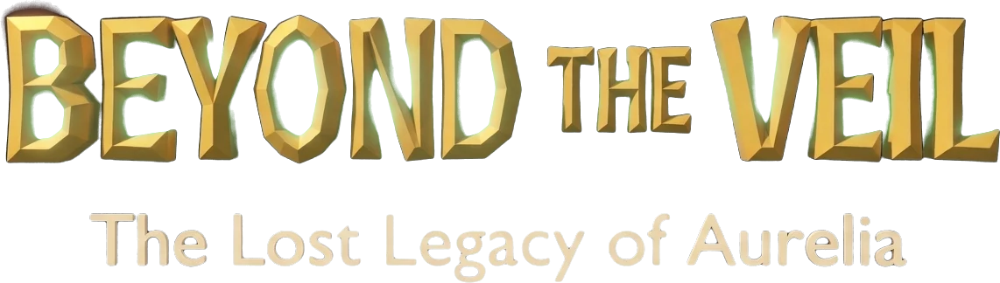
“Some worlds are hidden not because they are forgotten, but because they are too powerful to be found.”
Scroll or use arrow keysMatch gems, charge the hero
A young explorer travels across Aurelia's floating islands. Every match on the gem board powers her attacks on the Hollow's creatures and restores the sanctuaries.
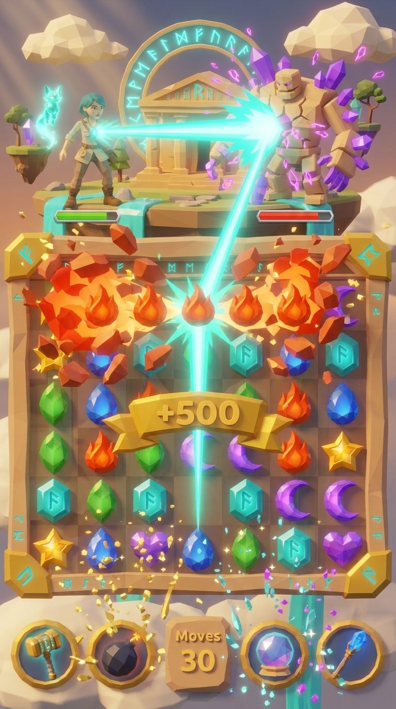
Aurelia
Temples on floating islands, golden bridges between sanctuaries and rivers of light. At its center beat the Heart of Eternity, which kept six primordial forces in balance.
Then the Hollow came from beyond the edge of reality. The guardians broke the Heart into six relics, raised the Veil, and Aurelia was forgotten.

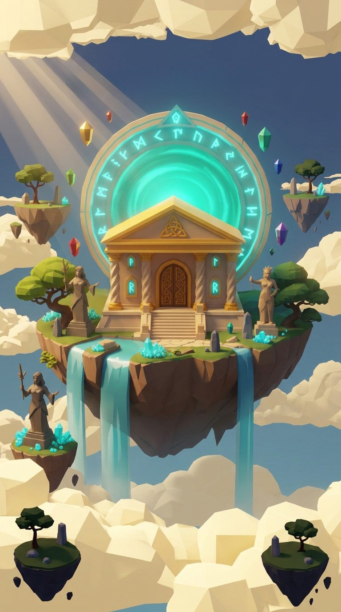
The shard chose her
Centuries later the Veil is thinning. Lyra Venn, a young explorer mapping ruins, finds a glowing teal shard in a collapsed temple. It opens a door in the sky to Aurelia, half in ruins.
At the first temple, Glim, the last of the sanctuary's keepers, wakes up and joins her.
Lyra, Glim & the guardians
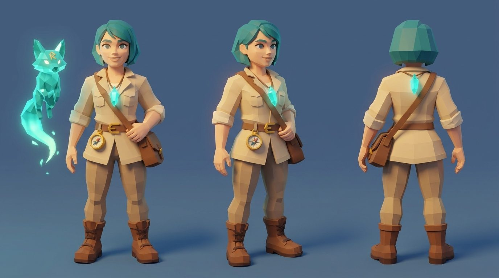
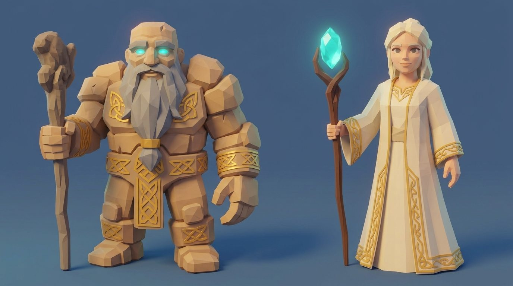
Six relics, six islands
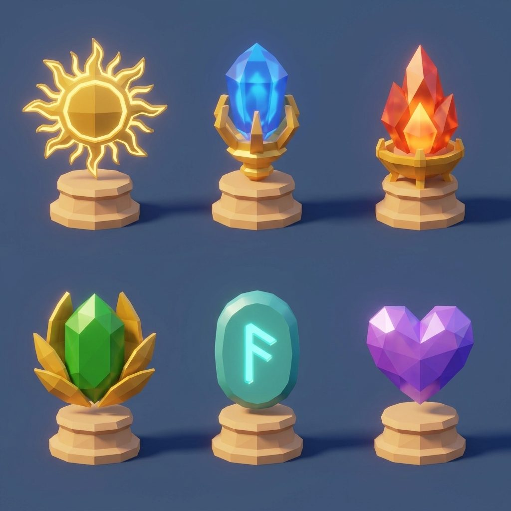
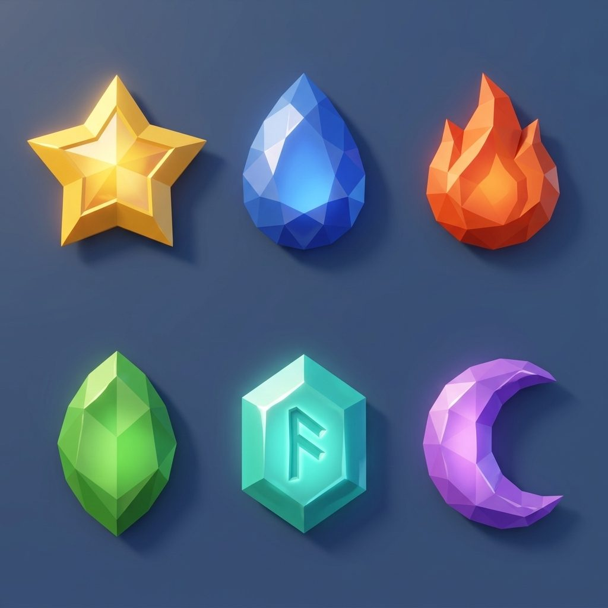
Match. Charge. Restore.
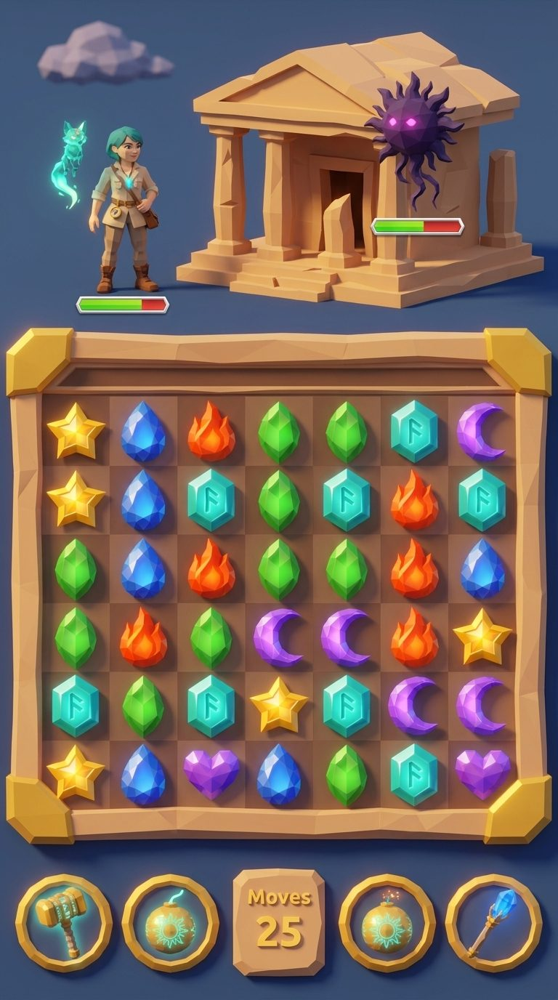
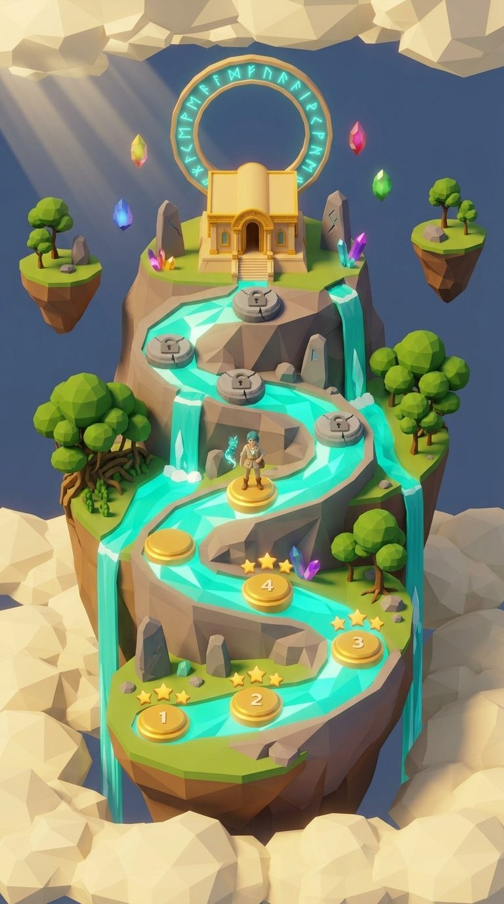
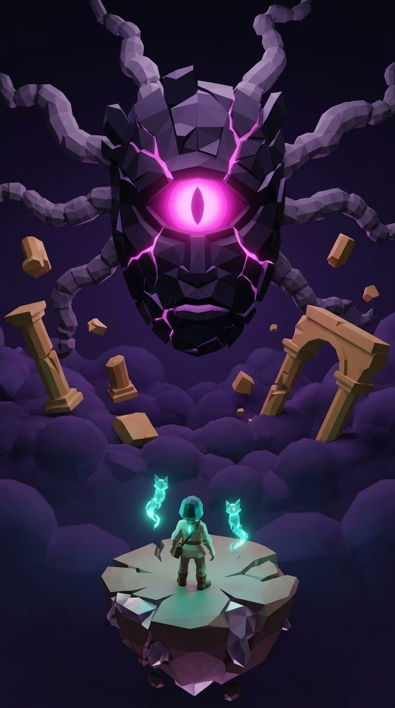
It was guarding something
Wisps, Shade Golems and Veil Wraiths guard every relic. At the end waits the Hollow itself: a mask of black and violet crystal facets with one great magenta eye.
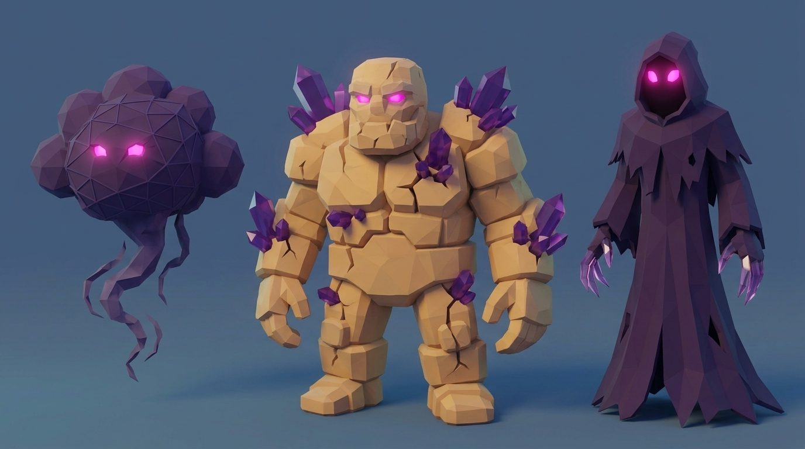
Low-poly toy diorama
Large flat facets, hard edges and no outlines. Warm sun from the top left, cool blue fill, bloom only on teal magic and gems. The UI is built from the same 3D materials.
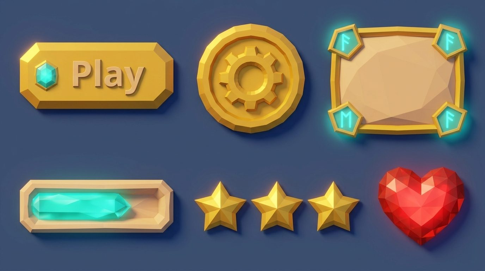
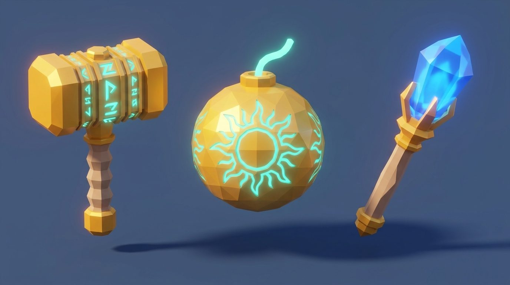
The Hollow was not only imprisoned.
Aurelia's greatest secret is still waiting behind the Veil.
Some worlds are hidden because they are too powerful to be found